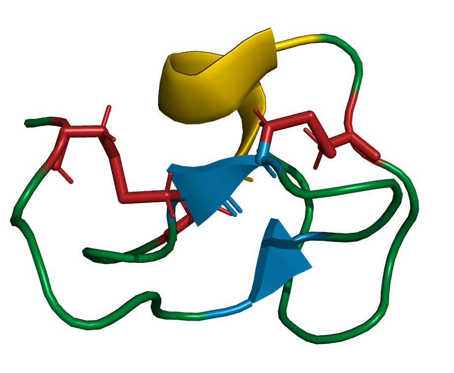

Recent Projects

Optimisation of Force Fields for NMR Structure determination
- Optimising Force Fields parameters calculated from the Automated Topology Builder 3.0 for use with NMR structure determination software
- Assignment of homonuclear NMR spectra
- Analysis of various protein and peptide structures

Stock Market Simulator
- Fully functional stock market simulator
- Uses Javascript, Firebase, and HTML/CSS
- Live Database Integration
- Features Google Authentication
Web Server for Prediction of Disulfide Dihedral Angles Using Chemical Shifts
- Implemented Armstrong, Kaas, and Rosengren's paper into a web server
- Developed using Python3, HTML, and Google Cloud Functions
- Facilitates the prediction of disulfide dihedral angles from chemical shifts
- Integrates advanced computational methods for protein structure analysis
Magic Angle Spinning Visualisation
- Interactive Visualisation of Magic Angle Spinning (MAS) in NMR experiments
- Visual representation of sample orientation and spinning dynamics
- Educational tool to explore MAS techniques
Dipolar Coupling Visualisation
- Dynamic demonstration of dipolar interactions in NMR
- Visualisation of why 54.7° is the "magic angle" in NMR
- Interactive and user-friendly interface
3D Matrix Rotation Visualisation
- Visualisation of matrices as ellipsoids and their effect on vectors
- Interactive 3D demonstration of rotational transformations
- Provides insight into matrix operations in a geometric context

Bluetooth Smart Ring Page Scrolling
- Uses accelerometer data to map ring rotation to page scrolling
- Integrates Bluetooth communication
- Python-driven processing for responsive scrolling effects